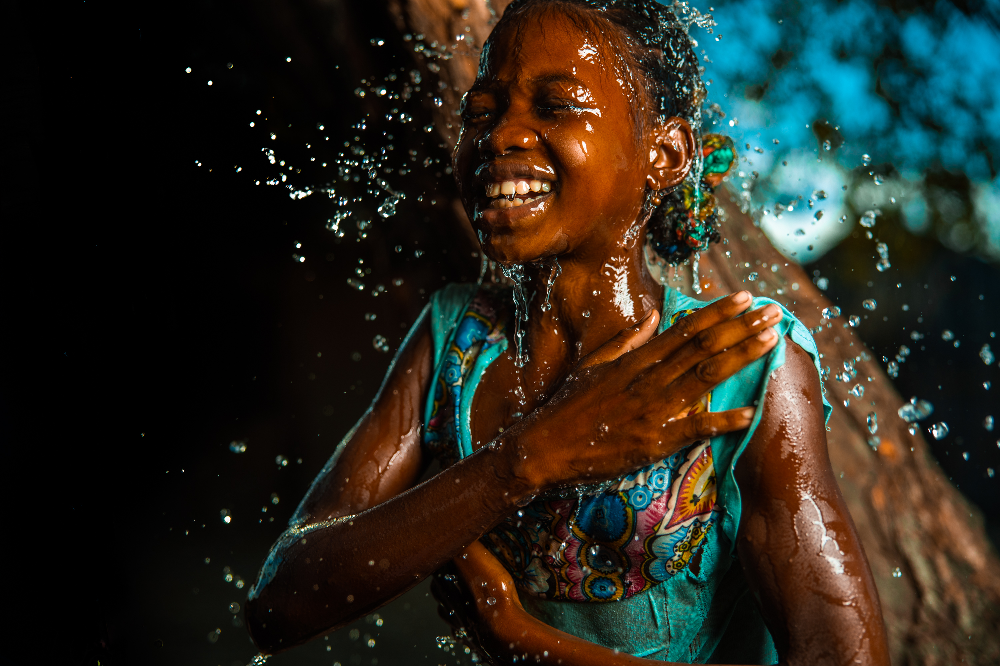
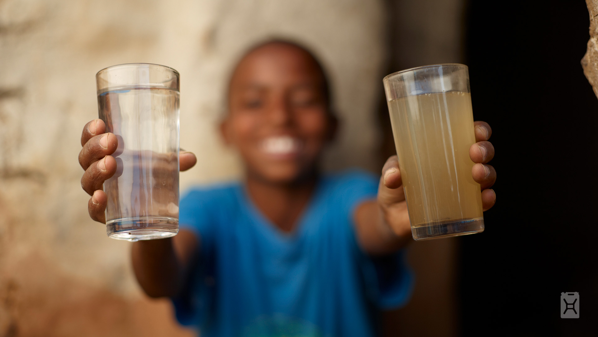

1
You give $10
Skip one coffee. Donate it instead. Every dollar of your public donation goes directly to a water project — zero taken for overhead.

771 million people still don't have clean water. charity: water has reached 18 million of them — with 100% of public donations going directly to the field. Your coffee money can be next.
Most charities use your donation to cover overhead like staff, marketing, and operations. charity: water is different. 100% of every public donation funds clean water projects in the field. Overhead is covered entirely by private donors.
That means your $10 doesn't get diluted. It goes directly to drilling wells, building filtration systems, and training local communities to maintain them for decades.
When a project is complete, charity: water sends GPS coordinates and photos proving exactly where your money went. Transparency isn't a promise — it's a receipt.
Give Clean Water Today
Skip one coffee. Donate it instead. Every dollar of your public donation goes directly to a water project — zero taken for overhead.
charity: water partners with local organizations to drill wells, build filtration systems, and train communities to maintain clean water sources for generations.
When your project is complete, you receive GPS coordinates and photos of the exact well or system your donation helped build. Real impact, verified.
I never thought $10 could do something real. Then I saw the GPS coordinates of the well my donation helped build — in a village I'd never heard of, for people I'd never meet. That changed how I think about giving.
Join millions of people who've already turned a small donation into something real — clean water, verified impact, a life changed.
Give Clean Water Today100% of your donation goes directly to water projects. No overhead taken.